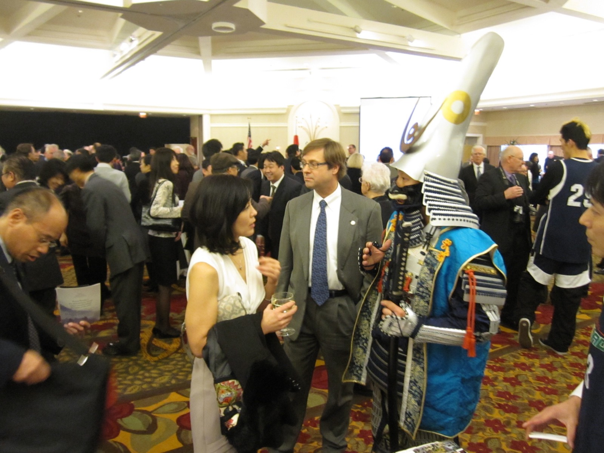

海外進出は自社だけの力では成功しません。現地での信頼できるパートナーと、制度を正しく使いこなす力が必要です。チルドレンジャパンは、ネットワークと補助金・公的制度の活用ノウハウを掛け合わせ、挑戦を加速する仕組みを提供します。
スーパー・小売バイヤー、飲食店オーナー、商社、会計士・弁護士など信頼できる現地パートナーを紹介。商談に同席し、文化や言語の壁を越えて交渉を橋渡しします。「人のつながり」こそが海外進出の成否を左右します。
対象、予算、時期が未定でも構いません。現在分かっていることと、まだ決まっていないことを整理します。
補助金活用を相談する